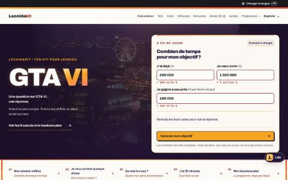
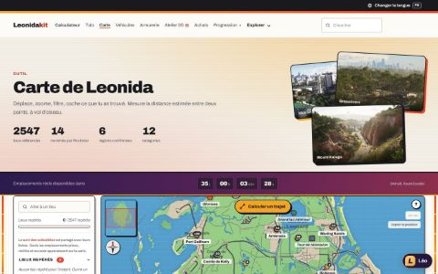
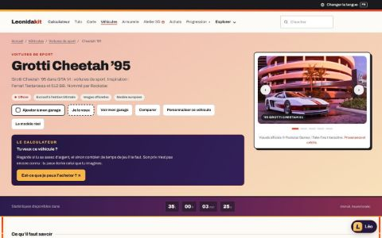
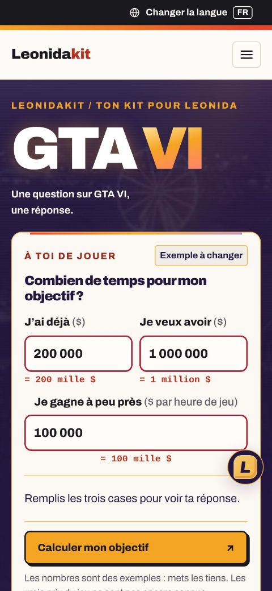

PRESSE ET CRÉATEURS
Tout pour parler
de Leonidakit.
Pour un article, une vidéo, un live ou un post : ce qu’est le site, ses chiffres tenus à jour, des fichiers prêts à l’emploi et la bonne façon de citer une information. Le kit et les informations se reprennent librement, avec un lien vers le site ; les visuels du jeu restent à Rockstar Games.


En bref
Le site en trois phrases
À reprendre tel quel, ou à couper.
Leonidakit est un site de fans consacré à GTA VI : une carte interactive de Leonida, des fiches sur les véhicules, les armes, les lieux et les personnages, un calculateur pour planifier achats, budget et temps de jeu, et Léo, un assistant qui répond aux questions sur le jeu.
Chaque information porte un statut (Officiel, Vu dans un média, Identification communautaire, Repère de la série, À confirmer) et sa source ; rien n’est inventé.
Gratuit, sans compte et sans cookie, en 6 langues, édité par un particulier et indépendant de Rockstar Games comme de Take-Two Interactive.
Les chiffres du site, recomptés à chaque mise à jour.
À télécharger
Le kit
Logo, icône et captures du site, un par un ou réunis dans une archive.
Tout le kit

Agrandir la captureAccueil

Agrandir la captureCarte interactive
- Agrandir la capture
Calculateur

Agrandir la captureUne fiche de véhicule

Agrandir la captureAccueil sur téléphone


Les captures sont en français. Les visuels du jeu qu’on y voit appartiennent à Rockstar Games.
Chaque grande page du site a aussi sa propre image de partage, avec son titre : c’est elle que montrent en principe WhatsApp, Discord, X ou Facebook quand on colle l’adresse de la page.
Identité visuelle
Les couleurs et la police du site
Pour un visuel, une miniature ou un générique aux couleurs de Leonidakit.
Papier
#FDFBF7
Le fond des pages
Encre
#1A1A1E
Le texte et les bordures
Corail
#E8452C
Le « kit » du logo, les accents
Ambre
#F5A524
Les boutons, les mises en avant
Nuit
#2B1B4D
Les bandes sombres, la nuit de Vice City
Archivo
Une seule famille, du texte courant au gras très noir des titres. Elle est libre (SIL Open Font License) et hébergée par le site.
- Courant 400
- Gras 700
- Titres 900
Le compte à rebours a commencé.
Citer le site
Citer une information
Trois règles simples, pour que ton public sache d’où vient chaque chose.
Une annonce officielle
Cite la source de Rockstar quand la fiche en donne une : elle figure sur sa ligne « Source », ou sous « Sources de ce dossier » pour un lieu ou un personnage. Le site n’est qu’un relais.
Une page du site
Pour citer le site, écris « Leonidakit » avec un lien vers la page d’où vient l’information : la carte, le calculateur et chaque fiche (véhicule, arme, lieu…) ont leur propre adresse.
Un point à confirmer
Une « Identification communautaire » ou un point « À confirmer » n’est pas une annonce : présente-le comme tel, avec son statut.
Exemple : « Source : Leonidakit, carte interactive de Leonida (leonidakit.com/carte.html) ».
Des formules prêtes à copier
Dans un article
Source : Leonidakit, carte interactive de Leonida (https://www.leonidakit.com/carte.html)
Sous une vidéo
Données : Leonidakit (https://www.leonidakit.com), site de fan non officiel de GTA VI
Dans un post
Vu sur leonidakit.com, le site de fan non officiel de GTA VI
Ce qui se reprend
Libre, avec un lien
Les fichiers du kit sont faits pour être repris. Les visuels du jeu, eux, restent à Rockstar Games.
Oui, librement
- Le logo et l’icône de Leonidakit, sur fond clair ou sombre, à la taille qu’il faut.
- Les captures du site, dans un article, une vidéo, une miniature ou un post, en créditant Rockstar Games pour les visuels du jeu qu’on y voit.
- Les chiffres et les informations du site, avec un lien vers la page.
Merci d’éviter
- Modifier le logo (couleurs, proportions) ou le mêler à un autre.
- Laisser entendre un partenariat, une approbation ou un sponsoring qui n’existe pas.
- Présenter les visuels officiels du jeu comme ceux du site : ils viennent de Rockstar Games, qu’il faut créditer.
Indépendance
Ce que le site n’est pas
Un projet de fan, pas un site officiel du jeu.
Leonidakit n’est ni affilié à Rockstar Games ou à Take-Two Interactive, ni approuvé ou sponsorisé par eux. Grand Theft Auto et GTA VI leur appartiennent.
Aucun contenu du site n’est payé par qui que ce soit. Un échange avec la presse, un créateur ou une marque ne change ni un statut, ni une source, ni un chiffre.
Contact
Une question, une interview, un partenariat
Le formulaire de contact s’ouvre avec le bon motif.
Dis qui tu es, pour quel média ou quelle chaîne, et ce dont tu as besoin : une précision, un chiffre, une capture particulière. Le message arrive directement chez l’éditeur ; aucun délai de réponse n’est garanti.